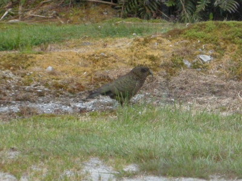
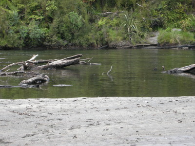
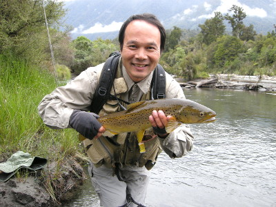

釣行日誌 ＮＺ編 「翡翠、黄金、そして銀塊」
ブリントさんの１番お気に入りの川へ
2010/11/30(TUE)-1
今朝も６時半に起きた。朝食の支度をしていると、また外の芝生にケアが現れた。それほど近くまでは寄ってこなかったが、しきりと餌を捜しているようだった。

紅茶とパンで簡単な朝食とする。食べながらブリントさんが政治談義を繰り広げたので、相づちを打ちながら聴き入る。腹ごしらえができたところで釣り支度をして車に乗り込む。今日は南島西海岸の数ある川の中でも、ブリントさんの１番お気に入りの川へ案内してくれるそうだ。
ロッジから南へ30分ほど走ると、遊歩道入り口の看板がある空き地に車は停まった。ここから山道を歩いて川へ降りてゆくのだ。小径の両側は鬱蒼と茂る原生林であり、先を歩くブリントさんからはぐれたら、とても１人では帰れそうもない。遊歩道とはいうものの、けもの道に毛の生えた程度である。期待に胸をふくらませつつ、ひたすら歩く。
どうやら川が近くなってきたらしく、ブリントさんは遊歩道からそれて森の中に歩み込んだ。かろうじて踏み跡の残る道らしき部分を探しながら谷へと向かう。おそらくは猟師ぐらいしか通らない道であろう。薄暗い木立の間を抜けると大きな淵の静かな水面が見えた。川へ着いたのだ。何の気無しにひょいっと覗きこもうとすると、ブリントさんが手真似で制した。相変わらずの冷静さで、彼は川の中の様子を覗っている。と、こちらを振り向いた彼が両手を60cmぐらいに広げ、ニッコリ笑う。いきなり大物を見つけたらしい。
『ええっ！ さっそく大物？！』
と驚いた僕は、身を低くして指示を待つ。付いて来い、との手招きで彼の後ろから下流側へと移動する。そこにはなんとか静かに河原へ降りられる岸辺があった。物音を立てないよう、静かに岸辺にずり下がる。ブリントさんは見通しの良いさっきの場所から見ていてくれる。心臓がバクバクと音を立てる中、なんとか平静さを保ちながらロッドを繋ぎ、リールをセットする。ガイドにラインを通す手がわずかに震えている。新品の３Ｘティペットに14番のロイヤルウルフを結び、準備が整った。あとはキャストするばかり。背後のブリントさんを振り返ると、しばらく水中の様子を覗っていた彼は、
「だめだ。今のはどっかへ行ってしまった...」
と残念そうに言った。まぁ、そんなにうまくはいかんわなぁ、と心持ちを切り替え、あらためてこの川の様子を見渡してみた。ひっそりと静まりかえった原生林の中、豊富な水量でゆっくりと流れている。山岳渓流という感じではなく、中流域という渓相である。ただ問題は、至る所に流木が沈んでおり、枝を突きだしていることである。

『こりゃぁ、ここで１尾掛けたらえらい苦労させられるぞ...』
と、心中でひそかに覚悟した。
左岸側を２人で魚影を探しながらしばらく遡行してゆくと、主流が狭まって両側の倒木の間を流れているポイントに出た。向こう側の倒木の下の深みは水流が弱く、何かしら怪しい雰囲気が漂っていた。しばらく観察していると、主流との境、波立っているあたりでふいに黒い鼻先が水面を割ってから沈んだ。
「ライズだ！」
思わずブリントさんと顔を見合わせ、さあ！と気合いを入れて、最初のキャストに挑む。左岸側なら左利きの僕にとってやりやすい。立ち位置を少し川の真ん中寄りに移動し、水流の真下から、ライズがあった場所の1.5mほど上流にロイヤルウルフを投射する。一投目は長すぎて倒木の枝を引っ掛けそうになったので慌てて引き戻す。二投目。流れに落ちたよく目立つ白いウィングが波に乗って漂い、上下しながら流れてくる。黒い丸みがゆっくりと水面に突きだし、フライを咥えて沈む。
「１、２、３！」
大きくしっかりとロッドを立てラインを引いて合わせる。フッキングした確かな手応えと共に水中の重量物がいきなり下流へ突進し、すぐにリールからラインが引き出されてゆく。この最初の突進を何とかこらえた後は、そこらじゅうで待ち構えている流木に潜り込まれないよう、逸走する鱒をコントロールする。何度かヒヤリとさせられたが、徐々に弱ってきたブラウントラウトから主導権を奪い、流木のない静かな淀みに引き寄せてくる。ブリントさんが背中のザックから器用にランディングネットを取り外し、ドンぴしゃのタイミングで魚体をすくい上げてくれた。
「やった～！」
「でかした！」
鱒をネットに入れたまま対岸の砂地に移動し、記念撮影をする。まずまずの型であった。

釣行日誌ＮＺ編 目次へ
サイトマップ
ホームへ
お問い合わせ